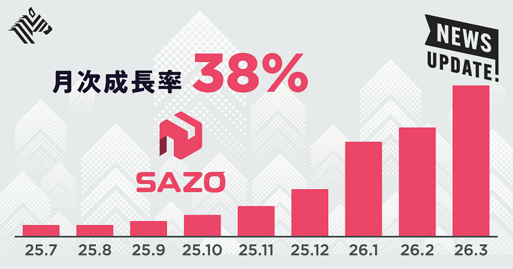
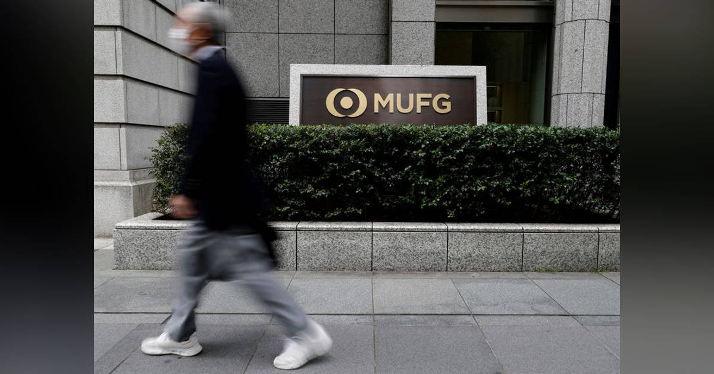
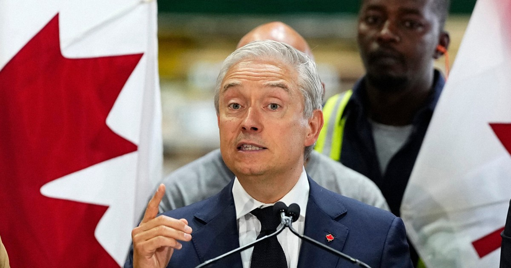
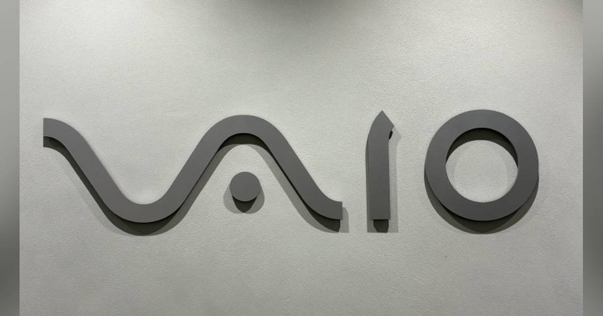

01
【32億円調達】26歳CEOが仕掛ける越境ECサービスが面白い
発行日時：2026年8月26日 05:30 JST ・ NewsPicks編集部

あなたに関係ありそうな理由
翻訳、関税、決済、物流を別々に扱っていた作業を、AIで一つの購入体験へまとめる設計は、使いにくいサービスの摩擦をどう減らすかを考える材料になるためです。
概要
越境ECサービス「SAZO」が、複雑で一部の熱心な利用者向けだった海外通販を、国内ECに近い感覚へ近づけようとしている記事です。同社は創業3年目の2026年7月、シリーズAで32.1億円を調達しました。日本、韓国、米国の三国間で商品を扱い、日本の利用者が韓国サイトの商品を買うだけでなく、海外の利用者が日本の商品を買う導線もつくっています。記事が追う中核は、海外の商品URLを読み込み、AIが商品情報を翻訳し、為替、関税、国際送料、手数料をまとめて計算する仕組みです。購入前に総額を見せ、決済、国際配送、輸入通関までを代行することで、価格が後から膨らむ不安や、出品者との言語の壁を小さくしようとしています。複数の店で買った商品をまとめ、配送ルートも最適化するため、物流を単に外注するのではなく、サービスの体験そのものとして設計している点が特徴です。記事によると、直近8カ月の月次平均成長率は38％、月次売上は1億円を超え、利用者の47.1％は初めて越境ECを使った人でした。既存利用者を奪うより、面倒そうだから避けていた層を市場へ入れようとしていると読めます。背景にはK-POPやアニメなど、現地でしか手に入りにくい商品に対する強い需要があります。送料や関税が上乗せされても欲しいという熱量が、一般品では成立しにくい越境取引の採算を支えます。一方で、同社自身もAmazonの配送速度と競うのではなく、趣味性の高い商品を買う体験に焦点を当てています。CEOの原体験、AIの予測精度、独自物流網がそろって初めて、少量多品種で手間の多い取引が回るという構図です。さらに、同社はAmazonのような最短配送と同じ土俵で争うのではなく、欲しいものを見つけた人が、価格と手続きを理解したうえで買い切れることを重視します。AI予測の精度は約95％とされ、正確な見積もりをどこまで実際の取引で保てるかが、成長の質を測る鍵になります。表示コメントでも、AIの価値は商品を見つけること以上に、通関、関税予測、決済、物流という現実の実行部分をつなぐ点にある、という論点が目立ちました。今後は、成長率だけでなく、予測した総額と実費の差、配送品質、対応地域の拡大、楽天やメルカリへの支援がどこまで続くかを見る必要があります。
仕事や会話で使える一言
AIの価値は、答えを出すことより、面倒な手続きを最後まで実行できる形にするところに出る。
NewsPicks原文を読む
02
【隠れた法則】人の心を動かすのは「合理性」ではない
発行日時：2026年8月26日 05:20 JST ・ LongBlack
あなたに関係ありそうな理由
企画書、案内文、チラシなどで、良さを並べるほど伝わりにくくなる場面を、行動科学の具体例から見直せるためです。
概要
LongBlackが、行動科学を踏まえたマーケティングは「商品の優位性をたくさん説明すること」ではなく、人が動く場面を意図して設計することだと整理した記事です。取材に応じたリチャード・ショットン氏とマイケル・アーロン・フリッカー氏は、消費者は売り手の自画自賛を昔から疑うため、合理的な理由を積み上げても説得が強まるとは限らないと説明します。最初の論点は、一つだけに集中した強みの方が信頼されやすいという目標希薄化効果です。ファイブガイズがハンバーガーとフライドポテトへ絞った例や、トマトの効能を一つだけ聞いた人の方が、二つ聞いた人より評価を高くした実験を使い、訴求を増やすほど一つひとつが弱まる危険を示します。次は、人が欲しくなった気持ちを実際の行動につなげる「トリガーモーメント」です。スニッカーズは空腹という日常の場面を商品へ結びつけ、ネーションワイドは給料日と貯金を結びつけました。重要なのは派手な演出ではなく、繰り返され、商品との関係が自然な瞬間を見つけることです。三つ目は、抽象語より頭に情景が浮かぶ言葉を使うことです。「高品質」や「プレミアム」ではなく、何をどう感じられるかまで言葉にすると記憶に残りやすいと、複数の実験やiPodの訴求例から説明します。さらに、小さな弱みを正直に見せると好感が高まるプラットフォール効果も紹介します。ただし、商品の本質を損なう欠陥を告白すればよいわけではなく、強みを照らす範囲に限るべきだとしています。2007年のトマトに関する実験では、健康効果を一つだけ聞いた人の方が、二つ聞いた人より商品を高く評価したといいます。利点を足すほど説得力が増すという直感を、同じ研究は否定します。商品と自然に結び付く場面を選ばなければ、思い出してもらえても行動には移りにくく、何を言わないかも設計の一部になります。最後に記事は、AIが大量のコピー案を出せる時代ほど、人間行動のモデルを持たずに選べば、誤った方向へ速く進むだけだと警告します。表示コメントでも、正論を並べるより、一つの具体的な情景と人間らしいギャップが、組織改革やブランドへの共感につながるという読みが共有されました。
仕事や会話で使える一言
伝えたいことが多いほど、まず一つに絞る。相手の記憶には、情報量より輪郭が残る。
NewsPicks原文を読む
03
ＭＵＦＧ、富裕層向け会員組織を立ち上げ 囲い込み競争が激化
発行日時：2026年8月26日 16:20 JST ・ Reuters

あなたに関係ありそうな理由
金融機関が、金利や商品だけでなく、相談・相続・体験まで含む関係性で顧客資産を囲い込もうとしていることが分かるためです。
概要
三菱UFJフィナンシャル・グループが、個人向け総合金融サービス「エムット」で富裕層向け会員組織を2027年3月に始めるという記事です。名称は「エムット Excellent Club」で、三菱UFJ銀行に3000万円以上の預かり金融資産がある人、または1000万円以上の資産運用残高がある人を対象に、招待制で運営します。対象は約75万人、預かり資産は50兆円超で、同行の個人顧客では約2％にとどまる一方、預かり資産では約半分を占めるとされます。入会金・年会費は無料で、現時点で会員数の数値目標は置いていません。提供するのは、残高に応じて還元率が上がるプラチナカード、銀行・信託・証券の専門家へのオンライン相談、預金・ローンの金利優遇、店舗での優先対応、スポーツ観戦などの体験です。記事の焦点は、単に高額顧客へ特典を付ける話ではありません。金利ある世界で預金と運用資産の獲得競争が強まるなか、資産を保有する人との関係を、世代交代の後までつなげる設計です。MUFGは2026年度下期に始めるデジタル相続サービスも使い、相続時にネット銀行などへ流れやすい資産を維持し、収益機会へつなげたい考えです。三井住友銀行・カードも最上位の「Olive Infinite」を始めており、メガバンクがカード、相談、相続、優遇を一つのサービス群に組み替える競争が見えます。少数の顧客が個人向け預かり資産の大きな比重を占める構成だからこそ、離脱を防ぐ施策はカードの還元率だけでは足りません。取引を始めた本人だけでなく、相続や家族の相談が生じる時点でも接点を残せるかが、資産の流出を抑える実務上の焦点になります。各サービスの利用条件も見極めたいところです。ただ、表示コメントには冷静な視点も多くありました。3000万円を預ける層にとって、スポーツ観戦やポイントより、手数料、商品選定、助言の質が本当に価値になるのか、という疑問です。銀行・信託・証券の相談が、情報の非対称性を縮めるのか、むしろ手数料の高い商品へ誘導する契機になるのかも問われています。会員制度の見栄えではなく、顧客が資産を置き続ける合理性を何で示せるかが、今後の焦点です。
仕事や会話で使える一言
会員制度は特典の数ではなく、顧客が長く任せる理由をつくれるかで価値が決まる。
NewsPicks原文を読む
04
カナダ、米国から輸入する約700品目に最大50％の関税へ
発行日時：2026年8月26日 01:33 JST ・ 毎日新聞

あなたに関係ありそうな理由
関税の応酬は外交の見出しだけで終わらず、調達先、物流、価格、取引先の選び方へ波及し得るためです。
概要
カナダ政府が、米国から輸入する約700品目に15〜50％の報復関税を課すと発表した記事です。発動は2026年9月8日未明とされ、鉄鋼とアルミニウムの税率は従来の25％から50％へ引き上げられます。対象は家庭用アルミホイルから鉄製の橋まで幅広く、衣類、オートバイ、魚介類も含まれます。背景にあるのは、トランプ米政権がカナダとの貿易交渉決裂後、8月22日に一部品目へ50％の追加関税を導入したことです。さらにトランプ大統領は、カナダ製の自動車と自動車部品に対する輸入関税を2027年1月から50％へ上げる方針も示していました。記事は、両国関係が交渉の決裂後に急速に悪化し、貿易摩擦がさらに強まる懸念を伝えます。数字だけを並べると、今回の発表は700品目と最大50％という強い措置に見えます。しかし重要なのは、対象品目、発動日、既存措置、新たな措置がどの順番で重なるかです。関税は特定の品目の価格を変えるだけでなく、企業がどこから部材や製品を調達し、どの価格を顧客へ転嫁できるかという判断に影響します。記事の経緯を時系列で置くと、8月22日に米国側の追加関税、9月8日にカナダ側の措置、そして2027年1月からのカナダ製自動車・部品への米国方針が並びます。対象と発動時期が異なるため、すべてを同じ関税としてまとめず、何がすでに始まり、何が方針段階かを分ける必要があります。アルミホイル、橋、衣類、オートバイ、魚介類という品目の幅も、消費者向け製品と産業用途の両方に関係する措置であることを表しています。記事本文の範囲でも、対象が日用品から産業用途まで広く、単一業界の問題ではないことが分かります。表示コメントでは、今回追加される品目と既存の自動車関税を区別して見るべきだという指摘や、貿易摩擦を食料・物流・経済安全保障の問題として捉える意見が出ました。一方、関税の強い言葉だけで将来の影響を断定することはできません。今後の交渉、実際の発動、対象品目の詳細、企業の調達変更を分けて追う必要があります。このニュースは、報復関税が発表されたという一回の出来事ではなく、交渉の決裂が企業と暮らしの選択にどう連鎖するかを見る入口です。
仕事や会話で使える一言
関税ニュースは税率だけでなく、対象品目、発動日、代替調達の三つを並べて読む。
NewsPicks原文を読む
05
法人パソコンにも高騰の波 “中古”の常識を変えた「リファービッシュPC」に企業が熱視線のワケ VAIOに聞く
発行日時：2026年8月26日 10:23 JST ・ ITmedia NEWS

あなたに関係ありそうな理由
PCの購入や入れ替えでは、初期価格だけでなく、セキュリティ、保証、回収後の扱いまで含めて比較する必要があるためです。
概要
VAIOのメーカー再生品「Reborn VAIO」が、物価や部材の高騰を受け、法人PC調達の選択肢として注目されている記事です。リース満了などで回収したPCを工場で清掃・部品交換し、再び出荷するリファービッシュPCですが、一般的な中古品との違いは、メーカー自らが再生し、新品と同じ1年保証とサポートを付ける点にあります。VAIOは2025年に約5000台を法人・個人向けに販売してほぼ完売し、2026年10月ごろの再販売にもすでに問い合わせが来ているといいます。再生工程は見た目を整えるだけではありません。天板、ベゼル、キーボード、パームレスト、タッチパッドなど外装の多くを新品に替え、内部の清掃、ビス交換、バッテリー交換を行い、新品製造時と同じ設備で動作確認します。OSはいったん削除し、中古PC向けの正規ライセンスで入れ直します。さらにシリアルナンバーも取り直し、前の所有企業の管理情報が残って使えない、といったリスクを抑えます。対象にするのは第11世代以降のIntel CPU、16GB以上のメモリを備えた機種で、一般業務に使える性能とTPM、指紋・顔認証などの安全性を確保する線引きです。新品時に30万円台後半だった機種を、4年落ちで10万円未満にした例も紹介されます。記事が示す課題は、安価な中古を売ることではなく、まとまった台数を安定して確保することです。VAIOはリース返却品を軸にしつつ、新品販売時に数年後の買い取りを予約する仕組みを検討しています。単発の在庫処分ではなく、返却、再生、再販売をつなぐ循環を成立させられるかが、事業としての持続性を左右します。再販売時の供給量が安定しなければ、全社展開や計画的な入れ替えには使いにくく、回収品をどう確保するかも導入判断を左右します。高性能PCを必要とする部署には新品、一般事務には再生品という使い分けも提案し、調達コストと資源循環の両方を狙います。表示コメントでは、新品同等の検査と保証があれば、法人だけでなく個人にも現実的な選択肢になるという声がありました。比較すべきなのは新品か中古かではなく、保証、管理情報の消去、性能、供給量まで含めた総コストです。
仕事や会話で使える一言
再生品の価値は安さだけではない。管理情報を消し、保証まで戻せるかが導入の分かれ目になる。
NewsPicks原文を読む